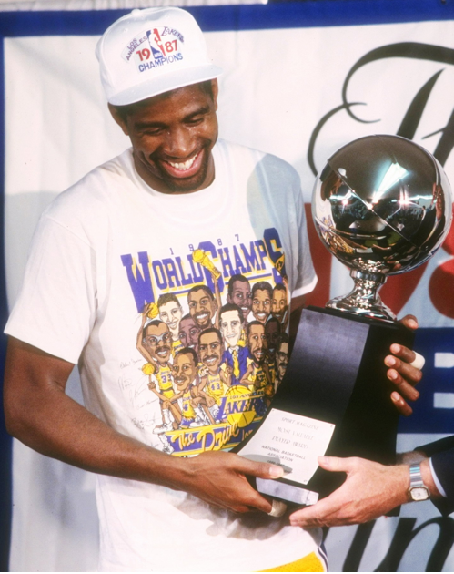

- Magic Johnson
Accolades: 5x NBA Champion, 3x Finals MVP, 3x MVP, 12x All Star, 10x All NBA
Bio: Earvin "Magic" Johnson is widely considered the greatest point guard in NBA history, and is also recognized for his work in the fight against HIV, helping spread awareness to millions. - Stephen Curry
Accolades: 3x NBA Champion, 2x MVP, 7x All Star, 6x All NBA
Bio: Wardell Stephen Curry is the most transcendent player of the 21st century, transforming the three point shot from a niche art, to a required skill, Curry also helped lead the greatest team of all time, the 2017 Golden State Warriors to an incredible 16-1 playoff record. - Oscar Robertson
Accolades: 1971 NBA Champion, 1964 MVP, 12x All Star, 11x All NBA
Bio: Oscar Robertson is recognized as the first player in NBA history to average a triple double for an entire season, helping revolutionize the position. He also fought to introduce free agency: changing professional sports forever. - Bob Cousy
Accolades: 6x NBA Champion, 1957 MVP, 13x All Star, 12x All NBA
Bio: Bob Cousy was one of the first NBA players to introduce a sort of flare and entertainment to the NBA, Cousy helped orcastrate the first half of the NBA's greatest dynasty: the 50s & 60s Celtics. - Isiah Thomas
Accolades: 2x NBA Champion, 1990 Finals MVP, 12x All Star, 5x All NBA
Bio: Isiah Thomas led the Detroit "Bad Boy" Pistons to 3 straight NBA Finals and back to back championships.